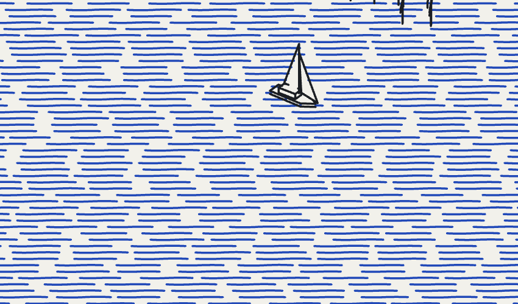
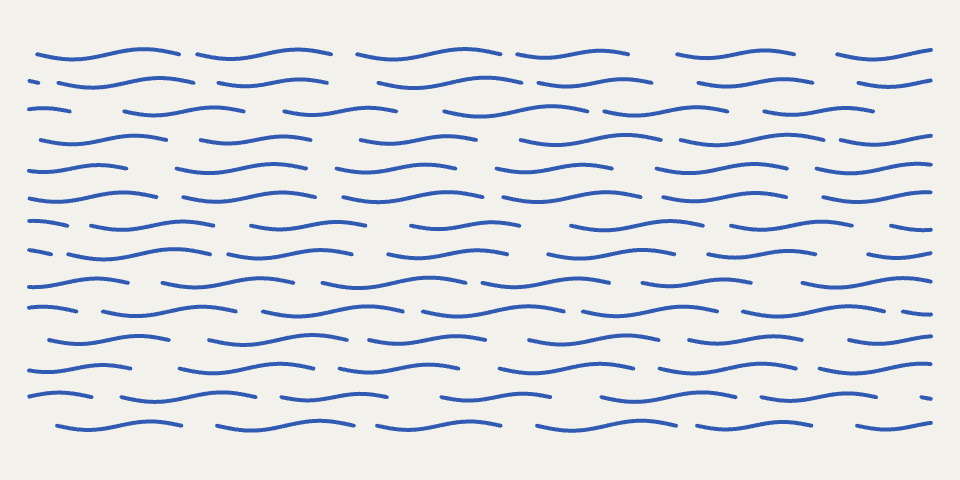
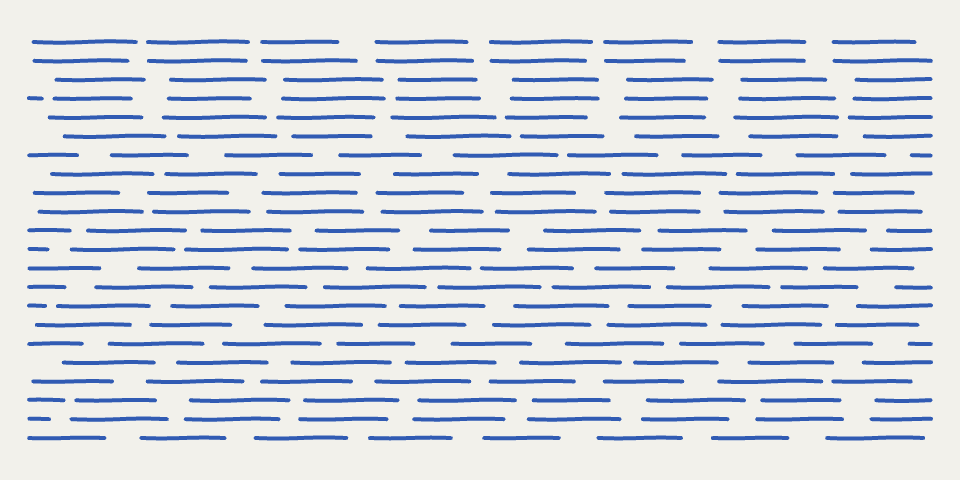
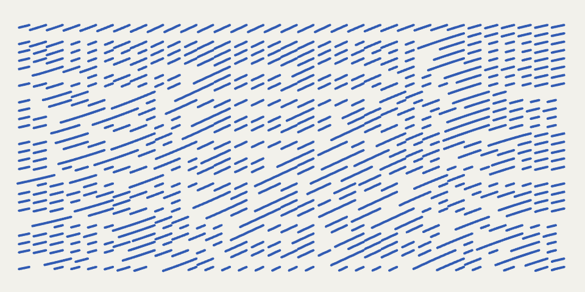
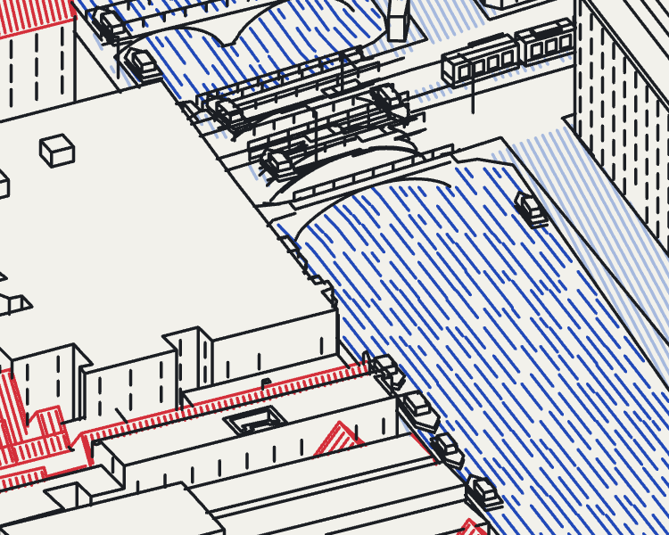
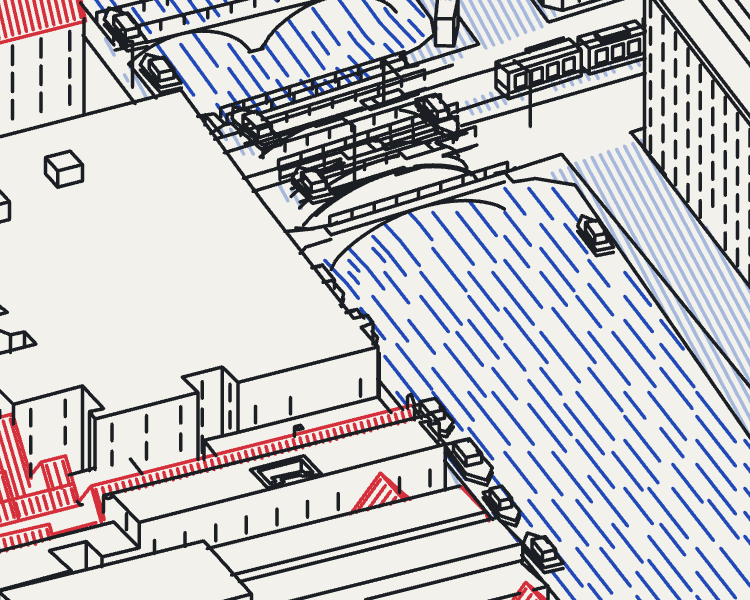

15 November 2026 · Original review
Water now has three drawing languages. Oceans use longer, visibly rising crests. Lakes use fine, almost level ripples. Rivers and canals use broken strokes that follow the channel, turning through bends. All three have fuller coverage: the former large blank patches have been removed.
Spacing revision: following visual feedback, ocean row spacing increased from 1.65 to 2.5 mm, lake spacing from 1.05 to 1.65 mm, and river spacing from 1.05 to 1.2 mm (reference pen and Detail). The samples and comparisons below show this revised treatment.






Some canals arrive as lake polygons. A narrow area with enough mapped waterway length through it is now treated as a channel (water area divided by centre-line length below 80 metres). Wide lakes retain calm ripples. This is a visual inference from available map geometry, not a hydrological classification.
River direction comes from interpolated centre-line tangents, falling back to real bank edges where centre lines are unavailable. Tile-cut edges are excluded from the bank field. Spacing adapts to pen width and Detail; river strokes keep apart. Existing bank clearance, bridge, road, pool, depth and wake masks remain active. Swimming pools keep their separate treatment.
Spacing revision against the first water treatment: Detail 1, 0.35 mm pen. The more open water reduces ink and estimated plotting time. The total waste percentage rises slightly because there are fewer clean water strokes in the total; other features are unchanged.
| Sheet | Waste before → after | Estimated plot time change |
|---|---|---|
| Hallstatt 1:1000 | 3.6% → 4.1% | -14.5% |
| Amsterdam 1:1000 | 7.0% → 7.1% | -5.5% |
Before · After (local generated LOD reports).
Reviewed all twelve golden sheets, Hallstatt and Amsterdam full sheets and enlarged water crops, the three surface samples, and the Nantucket ocean area. Pointe-Noire was rendered too, but its default frame contains no useful ocean sample. Regression tests cover class selection, canal inference, curved channel tangents, distinct surface character, repeatability, broad-pen spacing and water/wake clipping. Golden changes are confined to water waves and their aggregate plot/SVG summaries; counts, census and all other feature totals are unchanged. Build and all 607 tests pass.
No physical pen proof or exhaustive check of every location, bearing, junction or estuary was made. River direction and lake/channel inference depend on available map geometry. The existing golden suite has no substantial ocean case; the separate ocean sample and Nantucket render cover that visual check.